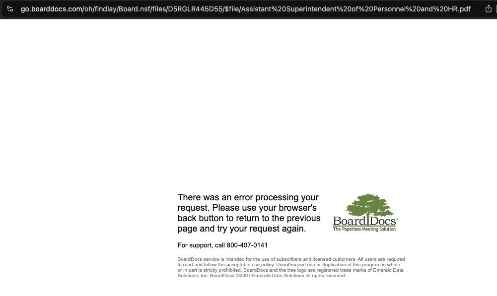

Unqualified and Overpaid: The Curious Case of FFE's New Directors
Following Kevin Manley's resignation, Findlay City Schools (FCS) took an unconventional approach by hiring two directors to fill a role previously managed by a single teacher: David Coolidge (47 years old) and his wife Mary Beth Coolidge.
David Coolidge (47 years old) and his wife, Mary Beth Coolidge.
FYI
David Coolidge is not a licensed teacher, according to the Ohio Department of Education's Educator Search Tool
- David's professional background, as detailed on FFE's Google Sites website, includes:
- Fine Arts Specialist for Findlay City Schools
- Director of the Findlay First Edition show choir
- Ten years in higher education as Director of Musical Theatre at Ohio Northern and Anderson Universities
- Nearly twenty-five years as a professional freelance artist (actor, writer, and director)
- Mary Beth's professional experience, also outlined on the website, features:
- Assistant Director of Findlay First Edition
- Operatic performances in Italy and with regional opera companies
- Faculty positions at multiple universities
- Masters of Music from the University of North Carolina at Greensboro
- Bachelors of Music from the Oberlin Conservatory of Music
- Certified teacher of Alexander Technique and Mindfulness
Compensation Analysis
Warning
A significant red flag in this transition is the systematic unavailability of crucial documents on the FCS Board of Education website:
- PDFs with titles beginning with "Assistant Superintendent of Personnel and HR" consistently fail to load
- Attempting to access these documents results in error messages
- Critical meeting minutes and compensation documents appear to be systematically inaccessible
- This lack of transparency prevents public scrutiny of the hiring and compensation process 
Mary Beth Coolidge's Salary
At the September 16, 2024 FCS Board Meeting, HR Assistant Superintendent Krista Miller informed the board of Mary Beth's salary reclassification:
- Step 14 pay scale (14 years of teaching experience)
- Master's Degree + 30 credit hours
- Annual compensation: $80,000 (reference)
- Ohio teaching certificate obtained in August 2024
With Mary Beth Coolidge being 35 years old, the Step 14 pay scale becomes even more implausible. Given her extensive professional background in opera, higher education, and performing arts, it would be impossible for her to have accumulated 14 years of teaching experience starting at age 21.
David Coolidge's Compensation
As of publication:
- No teaching certificate from Ohio Department of Education
- Reported salary around $100,000
- No official documentation available in BoardDocs meeting minutes
Comparative Compensation
- Previous Director (Kevin Manley): Approximately $91,000 with 33+ years of teaching experience
- Current Leadership (Coolidge Couple): Combined salary of nearly $180,000
The significant increase in administrative costs for what was previously a single director's role raises questions about the district's financial decision-making.
Key Takeaways
Key Takeaways
Based on the document, there are several suspicious circumstances surrounding Mary Beth Coolidge's salary classification that raise serious questions:
Timing and Credentials
- Mary Beth just received her Ohio teaching certificate in August 2024
- She's been given a Step 14 pay scale (implying 14 years of teaching experience)
- Her professional background suggests an extensive career in performing arts and higher education, not K-12 teaching
Unusual Salary Placement
- The document highlights an apparent inconsistency: her biographical details make it "impossible" that she has 14 years of teaching experience starting at age 21, given her extensive professional history.
Possible Interpretations:
- Potential favoritism/neoptism
- Circumventing salary protocols outlined in the Findlay Education Association's Collective Bargaining Agreement
- Compensating her at a higher rate than her actual teaching experience warrants
The salary classifications raise significant questions about the Findlay City Schools' hiring and compensation practices, especially considering:
- FCS hired two people to replace one previous director
- Combined, the Coolidge couple will earn nearly $180,000
- The previous director, Kevin Manley, earned about $91,000 with 33+ years of experience
The generous salary placement appears suspicious and seems to lack transparency, especially given the documented issues with accessing official Board of Education minutes and reports.
Red Shirt, Blue Rage: FCS Administrators Wage War on Their Own Alumni
A recent Homecoming event at Findlay High School has sparked controversy and renewed concerns about the treatment of students and alumni, particularly those associated with the Findlay First Edition (FFE) organization.
Context
This information is based on information gathered from various sources, including eyewitness accounts and social media discussions. Further investigation may be necessary to fully understand the situation.
A former FFE member, returning to their alma mater for Homecoming, found themselves at the center of an unexpected and unpleasant encounter with FHS principal, Megan Simon. The alumnus, eager to participate in the festivities, was allegedly pressured to change their red FFE shirt due to a perceived violation of the school's "blue and gold" theme. This follows the pattern previously discussed around employees, students, and parents who have shown support for FFE in the presence of or communication with FCS administrators.
This incident has further exposed the deep-seated animosity between Findlay City Schools administration and the FFE community. It demonstrates a persistent pattern of marginalizing and discriminating against FFE members, transforming what should be a celebratory homecoming event into yet another example of administrative overreach and potential harassment.
The confrontation over a simple red shirt reveals a troubling underlying dynamic: school administrators appear more concerned with enforcing arbitrary dress codes than fostering a welcoming environment for alumni and students. By targeting an FFE alumnus during a homecoming event—a time traditionally meant for reunion and school pride—the administration has once again shown its willingness to weaponize minor rules to suppress what appears to be a continuing institutional bias against FFE. This pattern of behavior raises serious questions about the professionalism and motivations of school leadership, suggesting a systemic approach to marginalizing those associated with FFE rather than promoting inclusivity and school spirit.
Historically, the Findlay First Edition (FFE) has been a cornerstone of Findlay High School's cultural and artistic identity, with its members consistently demonstrating excellence that enhanced the school's reputation. Through performances, competitions, and community engagement, FFE has not just represented the school, but elevated its standing, serving as a premier example of the talent and dedication inherent in Findlay's student body.
Today, however, this once-celebrated program finds itself increasingly at odds with an administration that seems intent on exterminating its legacy. The growing divide is not merely a disagreement, but a systematic erosion of a program that has long been a source of pride, achievement, and community recognition. What was once a jewel in Findlay High School's crown now appears to be treated as a threat—a troubling transformation that speaks volumes about the current administrations's approach to institutional culture and student achievement.